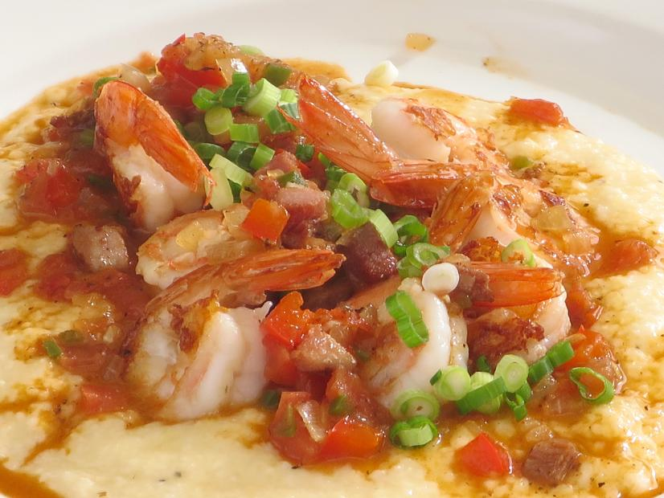

Shrimp and Grits Recipe

Ingredients
- 4 cups water
- salt and pepper to taste
- 1 cup grits
- 3 tbsp butter
- 2 cups shredded cheese
- 1 pound shrimp, peeled and deveined
- 6 slices bacon, chopped
- 4 tsp lemon juice
- 2 tbsp shopped parsley
- 1 cup sliced scallions
- 1 minced garlic clove
Directions
- Bring water to boil. Add salt and pepper.
- Add grits to boiling water. Cook 20-25 minutes.
- Remove from heat. Stir in butter and cheese.
- Rinse shrimp and pat dry.
- Fry bacon in a skillet until browned. Drain grease.
- Cook shrimp in grease until pink. Add lemon juice, chopped bacon, parlsey, scallions, and garlic. Saute 3 minutes.
- Spook grits into serving bowl. Top with shrimp mixture and mix well.
- Serve hot. Enjoy.
Recipe from Food Network